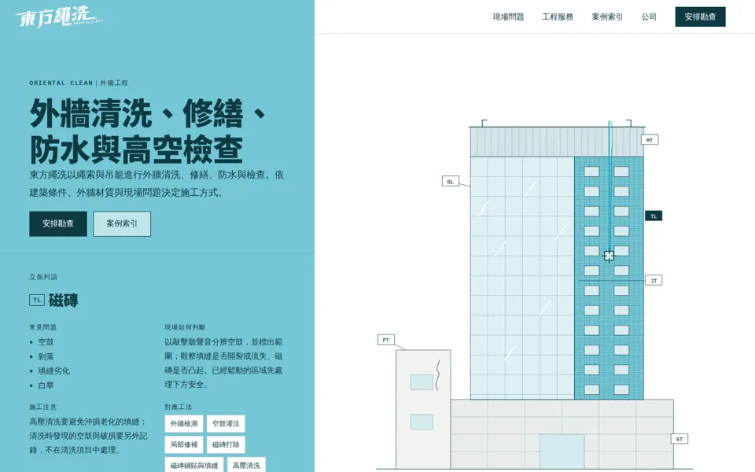
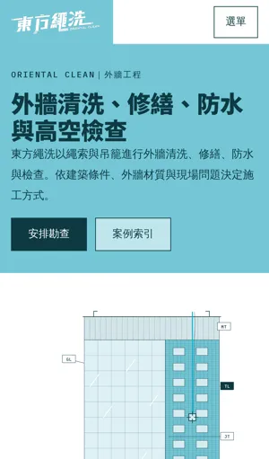
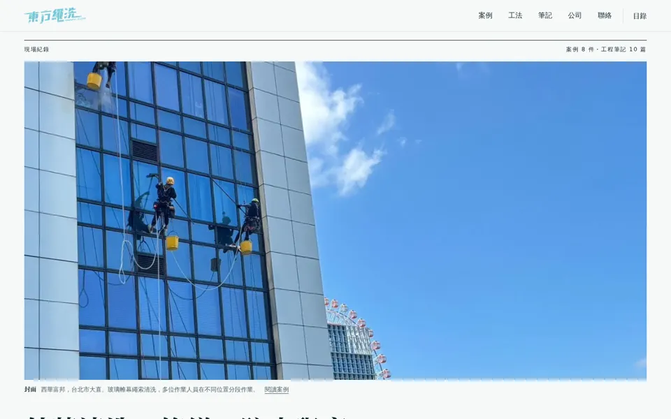
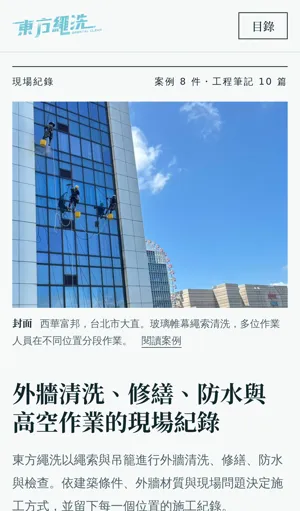
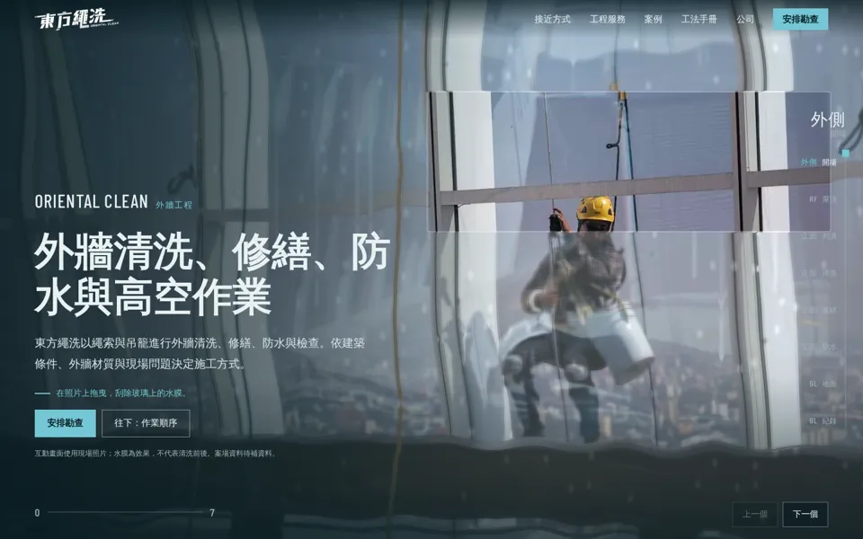
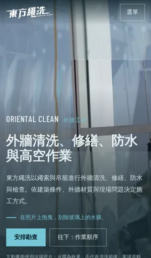

品牌系統型
A｜立面索引FACADE INDEX


首頁沒有照片：Logo 青藍色面與一張可操作的示意立面。把雙繩拖到不同材質上，判讀卡說明常見問題、判斷方式與工法。案例是可篩選的索引表，照片只在案例頁出現。
- 拖曳雙繩判讀立面材質
- 現場問題索引
- 案例索引表篩選
- 案例頁色面收起帶出照片
分支：claude/concept-a
三個方向的資訊架構、首頁、導覽、互動、攝影、字體、動態與案例瀏覽方式都不同；內容、案例資料與 SEO 架構共用。這一頁只做比較，不替任何一版評分。
品牌系統型


首頁沒有照片：Logo 青藍色面與一張可操作的示意立面。把雙繩拖到不同材質上，判讀卡說明常見問題、判斷方式與工法。案例是可篩選的索引表，照片只在案例頁出現。
分支：claude/concept-a
攝影編輯型


像一本建築出版物：封面照片從一條縫隙展開，接著是目錄、案例特寫、工法圖版與工程筆記，最後是版權頁。案例以印樣瀏覽，放大鏡可連續翻看所有案場照片。
分支：claude/concept-b
空間／電影型


以一次作業的時間為結構：從玻璃外側、屋頂、立面到地面。桌機上捲動控制時間，場景橫向前進；手機改為原生滑動。開場可在現場照片上刮除 WebGL 水膜。
分支：claude/concept-c
| A 立面索引 | B 現場紀錄 | C 垂降 | |
|---|---|---|---|
| 資訊架構起點 | 現場問題 → 材質 → 工法 | 案例 → 工法 → 筆記 | 作業順序與接近方式 |
| 首頁表現 | 無照片，可操作的立面 | 刊物封面、目錄、圖版 | 水膜開場與橫向場景 |
| 導覽 | 固定選單與索引 | 目錄對話框 | 高度計與場景按鈕 |
| 攝影 | 只在案例頁出現 | 全站主角 | 場景與全幅標題照片 |
| Typography | 粗黑體與等寬編碼 | 明體標題與黑體圖說 | 黑體與窄體數字 |
| 動態 | 繩索物理 | 裁切、遮罩與 Match Cut | 捲動控制時間、WebGL |
| 案例瀏覽 | 可篩選索引表 | 印樣與放大鏡 | 橫向膠卷與清單 |
| 背景 | 白與青藍色面 | 紙白 | 深海青 |
concept-src/docs/。所有預覽路徑都帶有 noindex 標頭，正式站未修改。